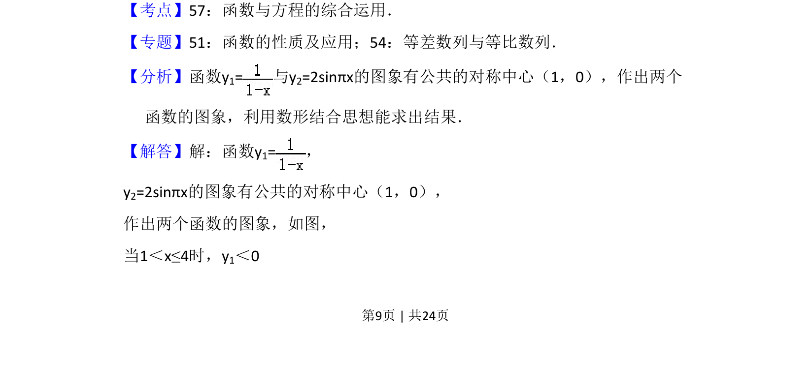
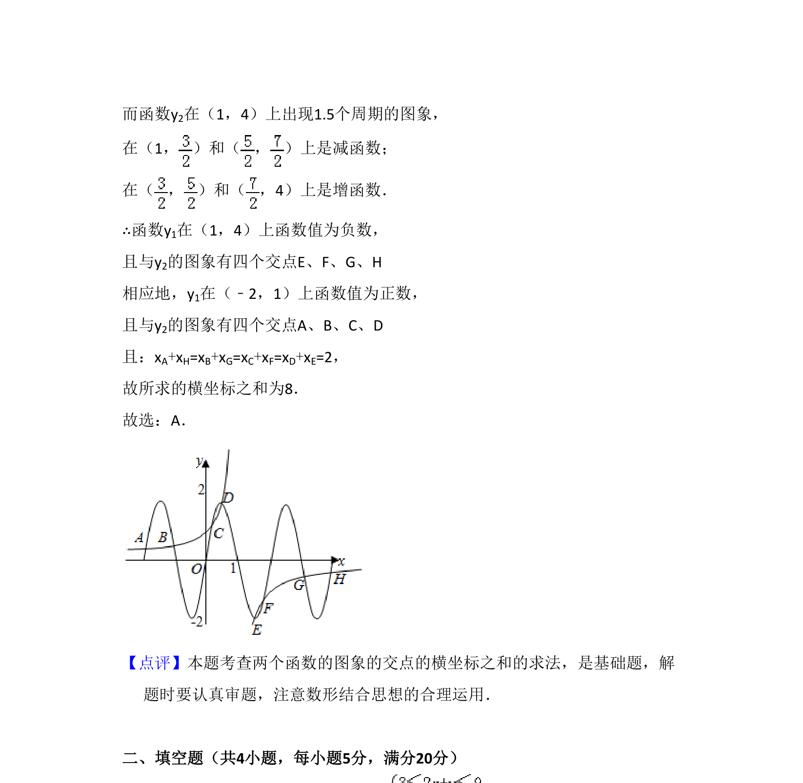

考点：函数与方程综合运用 数形结合 对称性
函数图象有公共对称中心，求两函数交点横坐标之和。


📄 原 PDF 第 9 页：
素材/真题/吉林/2008-2024·（吉林）数学高考真题/2011年高考数学试卷（理）（新课标）（解析卷）.pdf
12．（5分）函数y=的图象与函数y=2sinπx，（﹣2≤x≤4）的图象所有交点 的横坐标之和等于（ ） A．8 B．6 C．4 D．2
【考点】57：函数与方程的综合运用．菁优网版权所有 【专题】51：函数的性质及应用；54：等差数列与等比数列． 【分析】函数y1=与y 2=2sinπx的图象有公共的对称中心（1，0），作出两个 函数的图象，利用数形结合思想能求出结果． 【解答】解：函数y1=， y2=2sinπx的图象有公共的对称中心（1，0）， 作出两个函数的图象，如图， 当1＜x≤4时，y1＜0